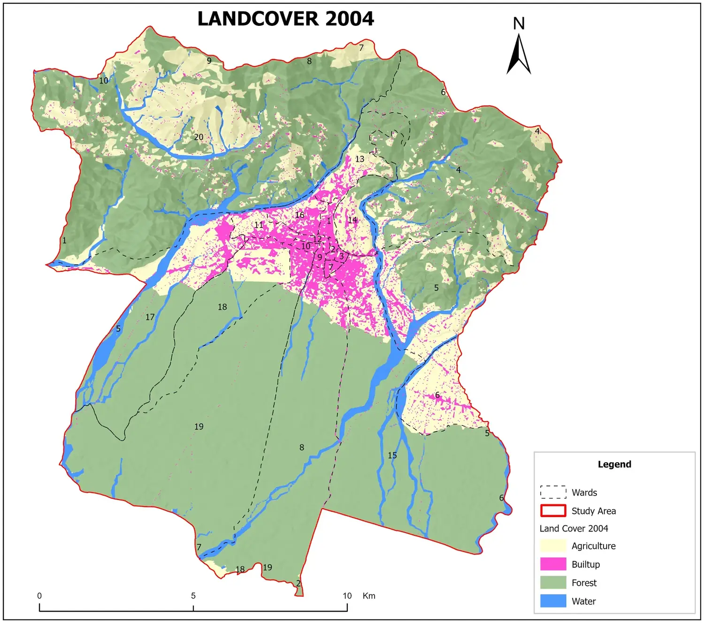
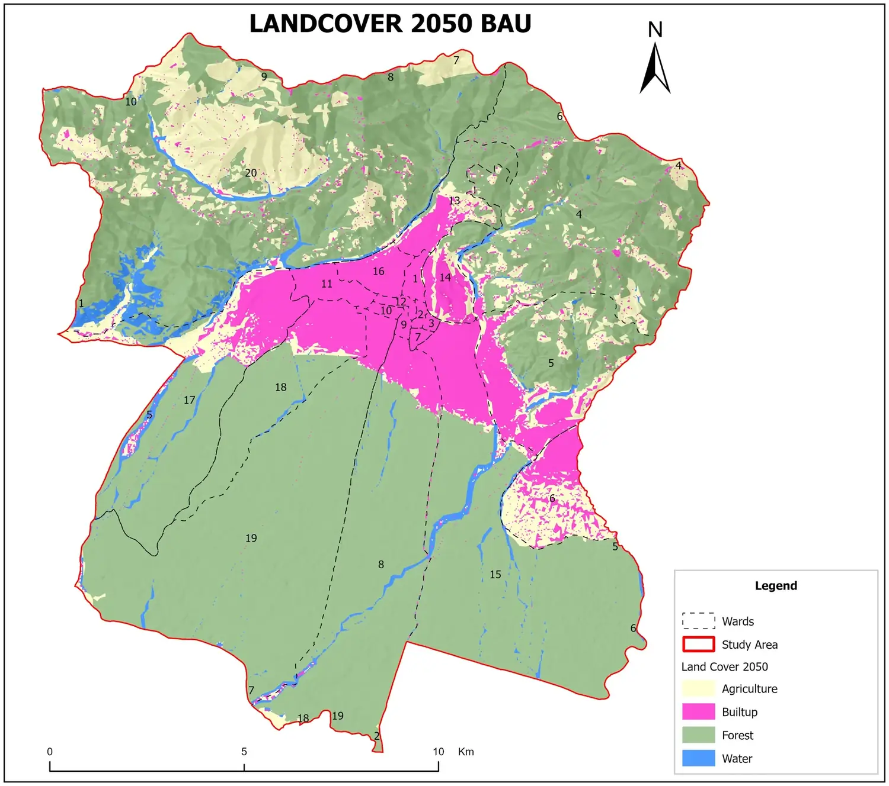

Dharan Risk-Sensitive Land Use Planning
Land-cover change simulated to 2050, six-criteria AHP suitability with natural-resource and hazard masks, and a hierarchy of urban nodes.
View case studySanjay Kumar Yadav Registered Civil Engineer, Lalitpur, Nepal
Integrating geospatial intelligence, civil engineering and infrastructure BIM to support risk-informed planning, land-use modelling and sustainable infrastructure development.
Dharan Sub-Metropolitan CityUrban nodes mapped over satellite imagery
Engineering is the foundation, geospatial analysis is the established practice, and BIM–GIS integration is the direction my current work is building toward.
More than four years of land-cover mapping, land-change modelling, terrain analysis and multi-criteria suitability analysis for Nepali municipalities and new towns, mainly in ArcGIS Pro, TerrSet and Google Earth Engine.
GIS & remote sensingRegistered civil engineer (Nepal Engineering Council No. 84549). Road and corridor geometry, structural analysis and design, drone and GPS surveys, estimation and engineering documentation.
Civil engineeringBIM Engineer Coordinator since January 2026, working in Revit, Civil 3D, InfraWorks and Navisworks with drone-survey terrain and imagery. GeoBIM and digital twins are developing interests, not completed specialisations.
BIM & GeoBIMLand cover for Dharan Sub-Metropolitan City (about 19,200 ha) was mapped for 2004, 2016 and 2025, then projected to 2050 under a business-as-usual scenario. Drag the handle to compare 2004 with 2050.


Cellular Automata–Markov model in TerrSet. The 2050 map is a scenario for planning support, not a forecast.
The 1.8% figure compares class totals only. It is not a measure of spatial or classification accuracy.
Built-up land grows mainly at the expense of farmland around the existing urban core. The same workflow, with a 2015 baseline, supports the Rakam Karnali new-town study.
Read the Dharan case studyEach case study follows the same structure: the planning problem, the data, the method, the GIS processing, the results and their practical implications.
Land-cover change simulated to 2050, six-criteria AHP suitability with natural-resource and hazard masks, and a hierarchy of urban nodes.
View case studyNine-criteria GIS suitability analysis with AHP weights across about 660 km²; roughly 58% of the area falls in the high and very high classes.
View case studyBusiness-as-usual land-cover projection from a 2015 baseline to 2055, and a seven-criteria suitability analysis for the structure plan.
View case studyExisting land use, land-use zoning, land capability and settlement-density map sheets for an ongoing planning assignment.
View case studyAll planning work, including municipal land-use classification
Consulting work in Nepal since 2022, combining municipal GIS and planning assignments with engineering and BIM coordination.
In my infrastructure BIM role, survey-derived terrain and imagery become the base for designed corridors and pipe networks, which are then coordinated and checked for clashes.
My role is to bring terrain models and imagery together with existing conditions, designed corridor alignments and pipe networks from other design software, and to run clash detection in Navisworks.
Developing, not delivered: open-standard GIS–BIM data exchange (IFC, CityGML) and infrastructure digital twins. I have not yet delivered a complete GeoBIM or digital-twin project.
Applied planning work raised the research questions I want to pursue: long-term landscape change from historical imagery, validated land-change models and explicit treatment of spatial uncertainty.
Singh, S. K., Joshi, A. M., Bhattarai, P. K., Karki, S., Yadav, S. K., Poudel, U., Sharma, N., Gouli, M. R., & Khadka, N. (2026). Integrating physical simulation and machine learning for flood susceptibility mapping in Kathmandu Valley. Manuscript submitted to H2Open, IWA Publishing.
I also carried out the GIS analysis for an M.Sc. thesis on reservoir site suitability in Tehrathum District. Tehrathum case study
The tools behind the case studies. The skills page states how I use each one, from advanced practical use to developing capability.
ArcGIS Pro (advanced; about 80% of my GIS work), QGIS, QField.
Google Earth Engine, Sentinel-2, Landsat 8/9, ALOS PALSAR, historical Google Earth imagery, NDVI and NDWI.
AHP and weighted overlay, Cellular Automata–Markov in TerrSet, Random Forest classification, hazard susceptibility.
Python and ArcPy for geoprocessing automation; GeoPandas, Rasterio, GDAL and scikit-learn.
Revit, Navisworks, Civil 3D, InfraWorks, AutoCAD, ETABS, SAP2000.
DJI Mavic 3E RTK, Pix4D, GPS data collection, KoboToolbox.
I am open to research collaboration, GIS and planning projects, engineering consultancy and BIM coordination.